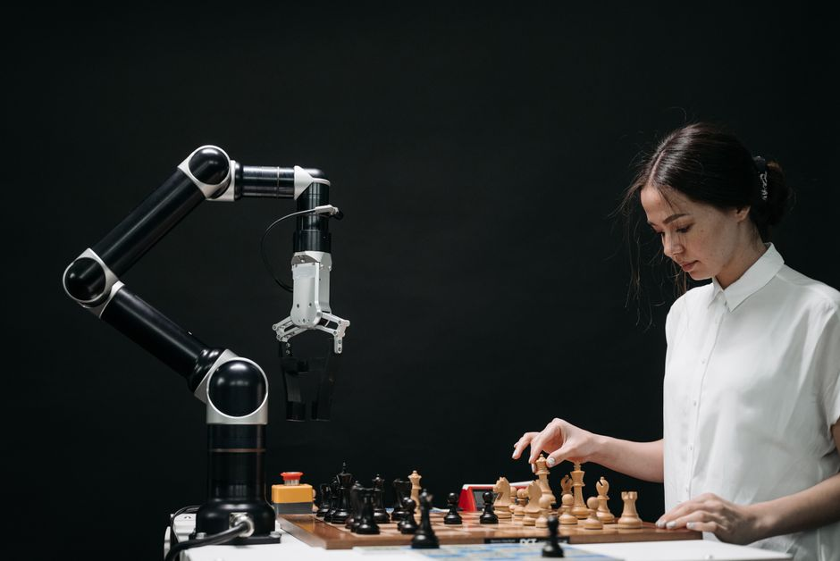

Imagine a robot that doesn't just move, but *sees*. A machine that can identify a specific tool, navigate a crowded room, or even sort colorful objects with precision. This isn't science fiction anymore; it's the incredible reality brought to us by **Computer Vision for Robotics**. At MakerWorks, we believe in empowering the next generation of innovators, and understanding how robots perceive their world is a crucial step. Get ready to unlock the secret behind how robots gain their "eyes" and make sense of everything around them!
What is Computer Vision? The Robot's Eyes and Brain
In simple terms, Computer Vision (CV) is a field of Artificial Intelligence (AI) that enables computers and robotic systems to "see," interpret, and understand the visual world. Just like our human eyes capture light and our brain processes it into meaningful information, computer vision systems use cameras to capture images or video and then sophisticated algorithms to extract useful data from those visuals.
Think about it: when you look at a red apple, your brain instantly recognizes it as an apple, knows its color, and might even recall its taste. For a robot, an image is just a grid of numbers (pixels) representing colors and brightness. Computer Vision gives the robot the power to turn those numbers into an understanding – to identify the apple, locate it in space, and perhaps even determine if it's ripe.
"Computer Vision is the science that enables machines to see the world, process visual data, and make intelligent decisions based on what they perceive."
Why is Computer Vision Crucial for Robotics?
Robots need to interact with the real world, which is dynamic, unpredictable, and full of visual information. Without computer vision, robots would be blind, relying solely on pre-programmed paths or simple sensors. Here’s why CV is a game-changer for robotics:
- Perception & Awareness: Robots can understand their surroundings, identifying objects, people, and environmental features.
- Navigation: Autonomous robots use CV to detect obstacles, map out environments, and find optimal paths, whether it's a drone navigating a field or a self-driving car on Indian roads.
- Object Manipulation: For tasks like picking and placing items in a factory, CV helps robots precisely locate and grasp objects, even if their exact position varies.
- Interaction: Robots can recognize human gestures, facial expressions, and even identify specific individuals, leading to more natural human-robot collaboration.
- Quality Control: In manufacturing, CV-powered robots can inspect products for defects with incredible speed and accuracy, ensuring high quality.
- Autonomy: It empowers robots to make independent decisions based on real-time visual data, reducing the need for constant human intervention.
How Does Computer Vision Work in a Robot (A Simplified View)?
Let's break down the basic steps a robot takes to "see" and "understand":
1. Image Acquisition: The Robot's Camera
It all starts with a camera. Just like your smartphone camera, a robot's camera captures light and converts it into digital images or video frames. These are essentially grids of pixels, each containing color and intensity information.
2. Image Pre-processing: Cleaning Up the View
Raw images can be noisy, blurry, or too bright/dark. Pre-processing involves techniques to clean up the image, making it easier for algorithms to analyze. Common steps include:
- Grayscale Conversion: Converting color images to black and white can simplify analysis by reducing data complexity.
- Noise Reduction: Removing unwanted "speckles" or distortions.
- Resizing: Adjusting image dimensions for faster processing.
3. Feature Extraction: Finding Clues
Once the image is clean, the computer looks for "features" – distinctive patterns or points that can help identify objects. These could be:
- Edges: Lines where there's a sharp change in brightness (e.g., the outline of a table).
- Corners: Intersections of edges.
- Shapes & Colors: Recognizing specific geometric forms or color patterns.
4. Object Detection & Recognition: What Am I Seeing?
This is where the magic happens! Algorithms use the extracted features to:
- Object Detection: Locate specific objects within the image and draw bounding boxes around them (e.g., "There's a bottle at these coordinates!").
- Object Recognition/Classification: Identify what those detected objects are (e.g., "That's a water bottle," "That's a human face").
- Image Recognition: Classify the entire image (e.g., "This image shows a classroom").
5. Decision Making: Taking Action
Based on what it "sees" and "understands," the robot can then make decisions and perform actions. If it detects an obstacle, it might stop or change direction. If it recognizes a specific tool, it might pick it up.
Key Computer Vision Concepts for Robotics
- Object Detection: Identifying and locating specific objects in an image or video. Think of it as drawing a box around every car in a traffic scene.
- Image Recognition (Classification): Categorizing what an image or a detected object represents. "Is this a dog or a cat?"
- Object Tracking: Following the movement of a specific object over a sequence of video frames. Essential for robots interacting with moving targets.
- Pose Estimation: Determining the 3D position and orientation of an object relative to the camera. Crucial for precise manipulation tasks.
- SLAM (Simultaneous Localization and Mapping): A robot building a map of an unknown environment while simultaneously figuring out its own location within that map. This is how autonomous mobile robots explore new spaces.
Tools of the Trade: Enter OpenCV
When you dive into computer vision, one name you'll hear constantly is **OpenCV (Open Source Computer Vision Library)**. It's a massive, free, and open-source library that provides thousands of optimized algorithms for image processing and computer vision tasks. It's the go-to toolkit for researchers, developers, and hobbyists alike, making it easy to implement complex vision tasks in various programming languages like Python and C++.
A Glimpse into OpenCV: Your First Robot Vision Code
Let's look at a super simple Python example using OpenCV to load an image and convert it to grayscale. This is often one of the first steps in many computer vision applications!
import cv2
import numpy as np
# --- Step 1: Prepare your image ---
# Make sure you have an image file named 'robot_vision_example.jpg'
# in the same directory as your Python script, or provide its full path.
# You can use any image you like!
# --- Step 2: Load the image ---
image_path = "robot_vision_example.jpg"
img = cv2.imread(image_path) # Reads the image into a NumPy array
# --- Step 3: Check if the image loaded successfully ---
if img is None:
print(f"Error: Could not load image from {image_path}. Please check the path and file name.")
else:
print(f"Image '{image_path}' loaded successfully!")
# --- Step 4: Convert the image to grayscale ---
# cv2.cvtColor is a function to change the color space of an image.
# cv2.COLOR_BGR2GRAY converts a BGR (Blue, Green, Red) image to grayscale.
gray_img = cv2.cvtColor(img, cv2.COLOR_BGR2GRAY)
# --- Step 5: Display the original and grayscale images ---
# cv2.imshow creates a window to display the image.
# The first argument is the window title, the second is the image data.
cv2.imshow("Original Color Image", img)
cv2.imshow("Grayscale Image", gray_img)
# --- Step 6: Wait for a key press and then close windows ---
# cv2.waitKey(0) waits indefinitely until a key is pressed.
# cv2.destroyAllWindows() closes all OpenCV windows.
print("Displaying images. Press any key to close the windows...")
cv2.waitKey(0)
cv2.destroyAllWindows()
print("Images displayed and windows closed.")
This simple code snippet demonstrates how easily you can start manipulating images with OpenCV. From here, you can explore functions for detecting edges, finding shapes, and even recognizing faces!
Real-World Applications in India and Beyond
Computer vision for robotics is transforming industries globally, and India is no exception. Here are some exciting applications:
- Manufacturing & Logistics: In factories across Pune, Chennai, and Bengaluru, robots use CV for automated assembly, quality inspection of electronic components, and efficient package sorting in warehouses.
- Agriculture: Drones equipped with CV cameras monitor crop health, detect pests, and even guide robotic harvesters in large agricultural farms.
- Healthcare: Surgical robots use vision systems for precise movements, while diagnostic tools analyze medical images for early detection of diseases.
- Autonomous Vehicles: Self-driving cars and delivery robots rely heavily on computer vision to navigate complex environments, detect pedestrians and other vehicles, and understand traffic signs on busy Indian roads.
- Security & Surveillance: Facial recognition systems and smart cameras use CV for access control and anomaly detection in public spaces and private properties.
- Educational Robotics: In STEM labs like MakerWorks, students build robots that use simple CV techniques for line following, color sorting, or obstacle avoidance challenges.
Your Journey into Computer Vision Starts Now!
The world of computer vision for robotics is vast and full of exciting possibilities. It's a field that combines creativity, problem-solving, and a touch of magic to bring intelligent machines to life. Imagine designing a robot that can help elderly people, navigate disaster zones, or even explore other planets!
To embark on this journey, start with:
- Learn Python: It's the most popular language for CV and robotics.
- Explore OpenCV: Experiment with its functions for image manipulation and feature detection.
- Work on Projects: Begin with simple projects like a color detector, a basic object counter, or even a robot that reacts to hand gestures.
- Join a Community: Connect with fellow enthusiasts and mentors.
Conclusion: The Future is Visually Intelligent
Computer vision is not just a technology; it's the gateway to truly intelligent and autonomous robots. It empowers machines to perceive, understand, and interact with our world in ways that were once unimaginable. As you delve deeper into robotics at MakerWorks, understanding computer vision will unlock a whole new dimension of possibilities for your creations.
Are you ready to give your robots the power of sight? The future of robotics is visually intelligent, and you can be a part of shaping it!
Ready to build robots that see? Explore our workshops and resources at MakerWorks and start your computer vision journey today!